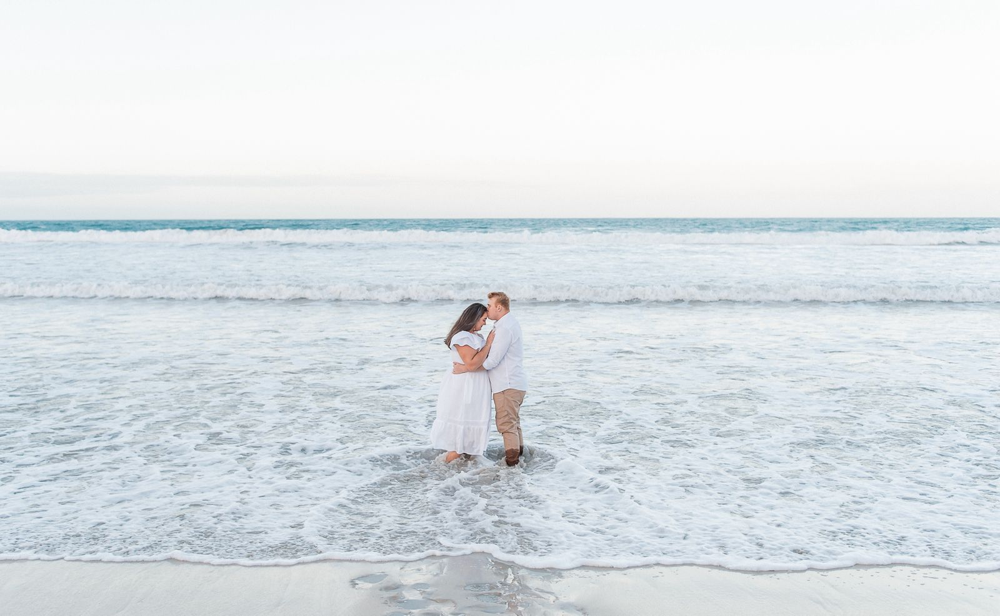
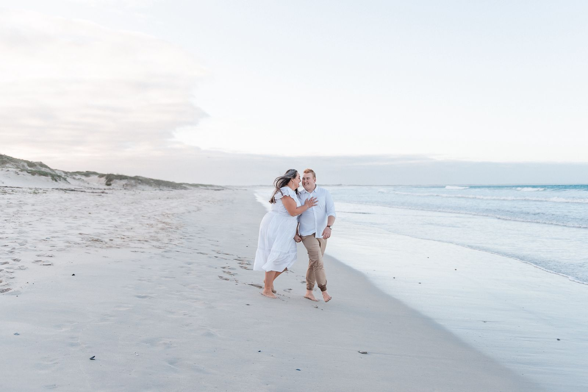
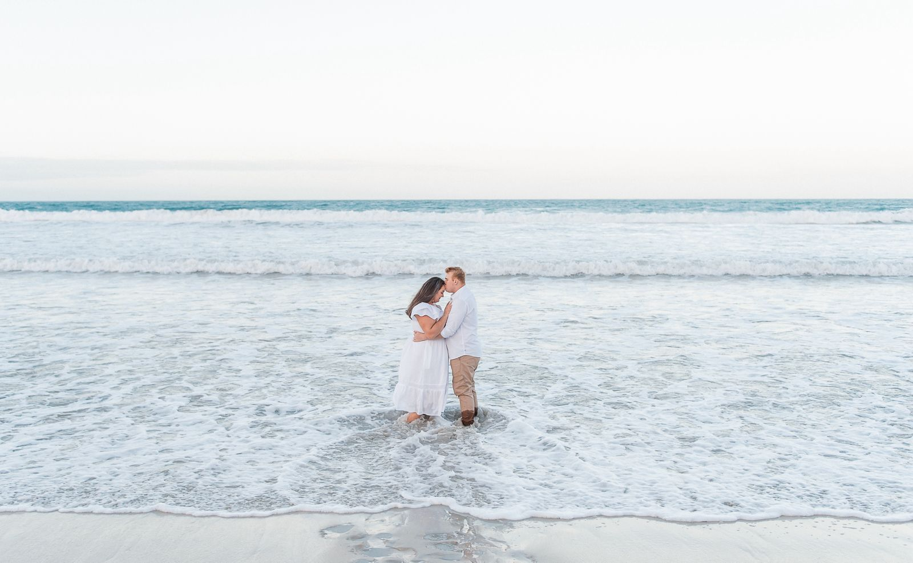
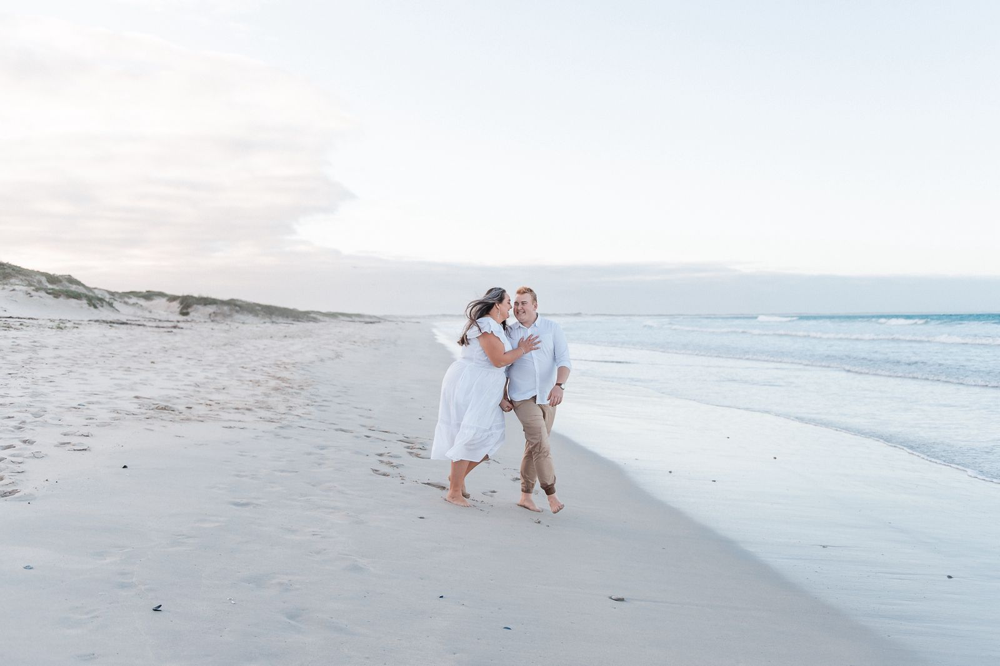
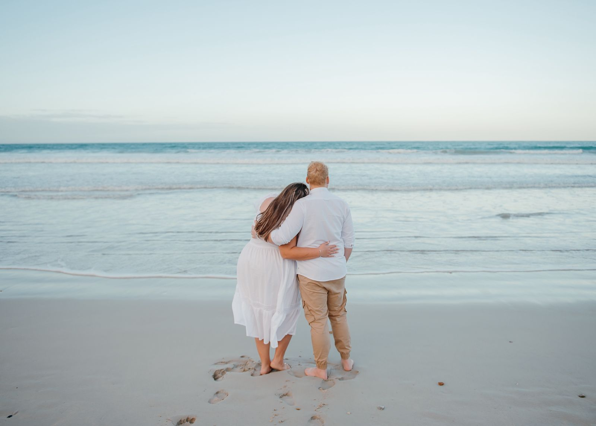
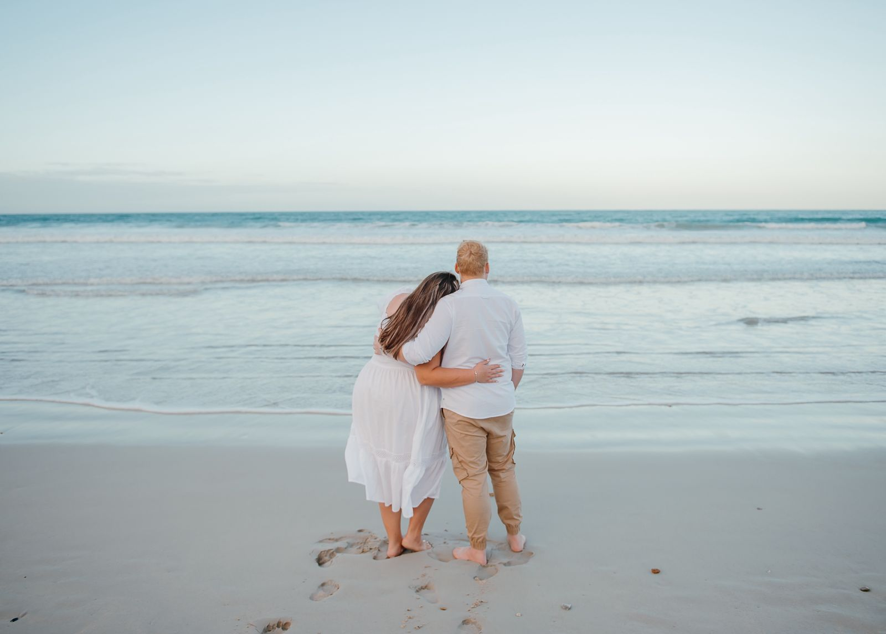

 


Stephan & Chané
28 November 2025 om 16:00 uur
Vrydag, 28 November 2025
om 16:00 uur
Die trou seremonie en onthaal word by De Haven Oost Trou Venue gehou.
Adres: Estate 39 Kaalfontein
Gaste word vriendelik versoek om hul eie verblyf te reël.
Alternatiewe akkommodasie is ook beskikbaar, wat nie ver van die trouperseel geleë is nie.
Gaste is welkom om vanaf 15:00 uur by die trouperseel te arriveer. Die seremonie begin om 16:00 uur. Ons vra dat gaste teen 15:50 uur hul sitplekke inneem.
Gaste wat oorslaap kan vanaf 14:00 uur by die perseel inboek.
“Kies gerus ’n sitplek, nie ’n kant nie.”
Ons volg nie die tradisionele gebruik van ’n bruid & bruidegom kant nie. Julle is welkom om te sit waar julle gemaklik voel.
By die onthaal sal daar ’n sitkaart beskikbaar wees wat aandui by watter tafel elke gas geplaas is.
Kleredrag: Semi-Formeel.
Vir die dames: 'n Netjiese rok of 'n stylvolle broekpak.
Vir die mans: 'n Netjiese Chino broek of formele broek saam met 'n knoophemp.'n Pakbaadjie, das/strikdas is nie verpligtend nie, maar is welkom.
Indien daar enige ander vrae is, bel of stuur gerus ’n boodskap aan Chané of Stephan.
Chané: 066 207 2851
Stephan: 079 112 6024
'n Geskenkie is nie oorbodig, maar 'n geldjie is meer wat ons benodig. Spaar jou voete die loop, ons sal eerder self wil koop.
Indien julle eerder 'n geskenkie wil gee:
Geskenkregister